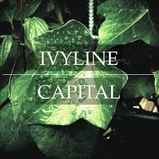
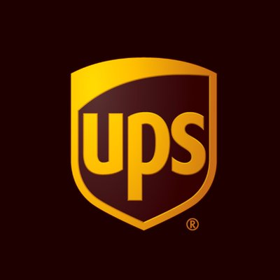

IVYLINE CAPITAL-MENTEE
I joined IvyLine Capital as a Mentee August 2018. I learned about metrics (Book Value, PE, PEG, Revenue Growth..etc), Security selection, Candlestick Patterns (Hammer, Doji, "Bullish Engulfing",Piercing Line), Chart Patterns (Inverse Head and Shoulders,Bull & Bear Flag, Bull & Bear Pennant, "h" pattern), indicators (20 MA, MACD, EMA, Chaiken Money Flow, Bollinger Bands), Trade Types, Market and Momentum Internals ($TICK, $ADD, $VOLD), Market Profile (POC, Excess, Value Area), Options Strategies (Covered Call, Iron Condor, Credit Spread, OTM Iron Fly), Futures
JPMorgan Chase
- Offered transparency to the complicated algorithms and calculations that go into liquidity risk calculations.
- Created a spark job that would ingest data from a csv into a dataframe, transform the dataframe completely into a view that shareholders preferred, and finally persisted the data into a database. Each csv had around 100 million records of data and there were at minimum 8 csvs. I was able to ingest, transform, and persist 8 such csvs in under 3 minutes.
- Created backend excel formula hierarchal mapping that could be viewed in tableau by a web service call. As the team moved from excel to tableau, the formulas for important calculations and algorithms were lost. This was a problem because the shareholders couldn't necessarily back trace outputs back to inputs. To solve this problem I pitched an idea to my manager that was approved and created a program. The program would parse excel formula data note down the dependencies for each cell and append the parent and children nodes to a tree structure. I created a front end around this so when a user clicked a value on tableau, on the same screen, a tree structure would appear showing all the values that go into the selected value. This process was instant.
- Optimized algorithms from O(N^2) to O(NLOGN) by converting my nested for loop to a binary search tree

United Parcel Service
- Saved ~100 hours of manual labor every quarter by automating audit processes with vba: took in data from the mainframe as csv, correctly created different csv for each respective business owner, reformatted these sheets, emailed the business owner the correct audit. This program also improved team efficiency because instead of spending the entire day sending out these audits the program was able to complete the process in ten minutes
- Programmed a dashboard in VBA that would display audit completion by each business group and approvers that still had to complete their audit. Dashboard was presented to senior manager to oversee audit status
- Created an REXX program that would provide team with unused RACF ID for id provisioning. Since IDs cannot be reused due to security this program not only improved company efficiency since people were able to get access to applications faster but also company security making sure team did not assign the same IDs
- Helped program a SKCarla program that would automatically send logs from the mainframe to the team
- Awarded the ‘Out on Limb’ award for the UPS Hackathon for creating an application that monitors the driver’s eyes and integrates an Amazon Alexa so Hub managers can monitor driver safety with “Hey Alexa…..”
- One of two people in my portfolio to present to upper management and the CEIO, Juan Perez. Acclaimed for setting a record on projects completed in one Summer by an intern.
Agadia Systems
- Created a professional looking login and registration page using ASP.Net
- Helped maintain a database of clients and customers
- Developed my javascript, SQL, and .NET skills for front end development